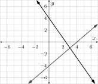
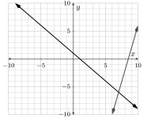
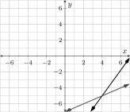
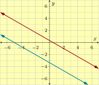

Section4.4Systems of Two Linear Equations Chapter Review
Solving a System by Graphing.
A system of two linear equations in two variables (or “system” for short) is a collection of two linear equations, each using the same two variables. A system is often presented like:
\begin{equation*}
\left\{
\begin{alignedat}{4}
Ax \amp {}+{} \amp By \amp {}={} \amp C \\
Dx \amp {}+{} \amp Ey \amp {}={} \amp F
\end{alignedat}
\right.
\end{equation*}
but the two equations do not need to be in standard form like the two equations above.
Systems of two linear equations in two variables arise in applications where, of course, there are two unknown quantities. But also there is some background information that lets you logically put together two ways that the variables must relate to each other. See Example 4.1.4 and Checkpoint 4.1.14 for some examples.
A solution to a system is an ordered pair of numbers that can be substituted in to the two equations for the two variables, and make both equations true (not just one or the other). It turns out that a system of two linear equations in two variables will always have either exactly one solution, no solutions at all, or infinitely many solutions that all lie along one straight line.
One method to find the solution(s) to a system is to graph the two lines. Most of the time, the lines cross sat one point, and this one point \((x_1,y_1)\) is the only solution to the system. If you graph precisely and accurately, then you can discern the coordinates of this crossing point and you know the solution to the system.
Graphing might reveal that the two lines are parallel and never cross. Then you have an inconsistent system, and there is no solution. Or you might find that the “two” lines are actually the same line. This means you have a dependent system and there are infinitely many solutions (which are all the points along that common line).
Checkpoint4.4.1.
The graph of two lines represents a system of two linear equations. Use the graph to identify the solution to the system.

Explanation.
The lines cross at the point \({\left(3,-1\right)}\text{,}\) so that is the solution.
Checkpoint4.4.2.
Solve the given system of linear equations graphically.
\(\left\{
\begin{alignedat}{3}
y \amp= {-\left(x+5\right)+6}\\
y \amp= {4\mathopen{}\left(x-9\right)+2}
\end{alignedat}
\right.\)
Explanation.
If we graph these lines, we find they cross.

The only solution is where they cross, which is at \((7,-6)\text{.}\)
Checkpoint4.4.3.
Solve the given system of linear equations graphically.
The only solution is where they cross, which is at \((5,8)\text{.}\)
Substitution.
One technique to solve a system of two linear equations in two variables is called substitution. With this technique, you choose one of the variables from one of the equations and isolate that variable. Then “substitute” that expression into the other equation, replacing that variable. Most of the time this leaves you with one equation in only one variable, so you can use skills from Chapter 2 to solve for that one remaining variable. With one of the variables solved for, it’s not much more work to solve for the other.
If either of the equations can be simplified (for example by distributing, by combining like terms, or by scaling all terms to clear denominators) then you should do that as a first step. If there are like terms on opposite sides, you should use algebra to combine them together on one side. Then it is wise to identify which of the four instances of a variable (among the two equations) has the simplest coefficient, and choose that variable as the one to isolate. For example if any of the variables have \(1\) or \(-1\) as their coefficient, then you can isolate that variable without using division, and without potentially bringing more fractions into the process.
You may find that after you make a substitution and simplify, both of the variables disappear instead of just one. When this happens, you either had an inconsistent system (with no solution) or a dependent system (with infinitely many solutions). If the equation you now have is an outright false equation (like \(0=1\)) then you had an inconsistent system. If it is an outright true equation (like \(2=2\)) then you had a dependent system.
\begin{equation*}
\begin{aligned}
x \amp= 3y+1\\
x \amp= 3\left(-\frac{5}{7}\right)+1\\
x\amp=-\frac{15}{7}+\frac{7}{7}\\
x\amp=-\frac{8}{7}
\end{aligned}
\end{equation*}
Checkpoint4.4.5.
Desi owns a coffee shop and they want to mix two different types of coffee beans to make a blend that sells for \(\$12.50\) per pound. They have some coffee beans from Columbia that sell for \(\$9.00\) per pound and some coffee beans from Honduras that sell for \(\$14.00\) per pound. How many pounds of each should they mix to make \(30\) pounds of the blend?
(a)
Write two equations that form a system for this scenario.
Explanation.
We have \(C\) pounds of Columbian coffee and \(H\) pounds of Honduran coffee. Since there must be \(30\) pounds total, one equation is \(C+H=30\text{.}\)
The total cost of the Colombian coffee in the blend will be \(9C\text{,}\) and the total cost of the Honduran coffee in the blend will be \(14H\text{.}\) All together, the blend has a total cost of \(12.50\cdot30=375\) dollars. So another equation is \(9C+14H=375\text{.}\)
(b)
Isolate one of the variables in one of the equations.
Explanation.
We choose to isolate \(C\) in the first equation. All we need to do subtract \(H\) from each side, and then \(C = 30 - H\text{.}\)
(c)
Substitute the isolated expression into the other equation.
Explanation.
Making the substitution: \(9(30 - H) + 14H = 375\text{.}\)
(d)
Solve this equation in one variable and then solve for the other variable using the isolation from a previous step. Finally, report how much of each type of coffee Desi should use.
Since \(L\) is already isolated in the second equation line, we will use that and substitute \({-5\mathopen{}\left(r-1\right)-1}\) in for \(L\) in the first equation:
This is an outright false equation, so there is no solution.
Elimination.
Yet another option for solving a system of two equations in two variables is to use the elimination method, also known as the addition method. With this technique you cleverly scale one or both equations so that terms that go along with one of the variables have opposite coefficients. Then you can add the left sides together and the right sides together, and the resulting equation only has one variable. From there it is easy to solve for that one variable, and then use that solution to solve for the other variable.
Just as with the substitution method, it is wise to begin by simplifying the equations if they can be simplified. And scaling the equations just to clear denominators or decimal points. Furthermore, since you will be adding terms from different equations, it is wise to covert each equation into standard form so that the corresponding terms are aligned.
You may find that after you add to equations to eliminate a variable that both of the variables have been eliminated. When this happens, you either had an inconsistent system (with no solution) or a dependent system (with infinitely many solutions). If the equation you now have is an outright false equation (like \(0=1\)) then you had an inconsistent system. If it is an outright true equation (like \(2=2\)) then you had a dependent system.
What numbers could you multiply each term in the first and second equations by that would be helpful?
Explanation.
If we multiply the first equation through by \(5\) and the second equation through by \(-3\) then the \(x\)-terms will be \(15x\) and \(-15x\text{,}\) and adding will eliminate \(x\text{.}\)
(b)
After multiplying the terms in the first by \(5\) and the terms in the second equation by \(-3\text{,}\) and adding the two equations together, solve for \(y\text{.}\)
We can multiply the second equation by \(-2\text{,}\) and then add the sides of each equation to eliminate \(I\text{.}\) This leaves the equation \({9J}={37}\) which allows us to find \({J = -7}\text{.}\) From here, substitute this into any of the previous equations that still have both variables to find \({J = -7}\text{.}\)
ExercisesReview Exercises for Chapter 4
Section 1: Solving a System by Graphing
1.
Check if the given point is a solution to the given system of two linear equations.
Is \({\left(5,-3\right)}\) a solution?
\(\left\{
\begin{alignedat}{3}
y \amp= {-{\frac{7}{4}}\mathopen{}\left(x-1\right)+4}\\
y \amp= {-4\mathopen{}\left(x-4\right)+1}
\end{alignedat}
\right.\)
Identify Solution from Graph.
The graph of two lines represents a system of two linear equations. Use the graph to identify the solution to the system.
2.

3.

See How Many Solutions.
Simply by looking closely at the linear equations, determine how many solutions the system will have. And state whether the system is dependent, inconsistent, or neither.
4.
\(\left\{
\begin{alignedat}{3}
y \amp= {{\frac{1}{7}}\mathopen{}\left(x-6\right)+8}\\
y \amp= {{\frac{3}{5}}x+1}
\end{alignedat}
\right.\)
5.
\(\left\{
\begin{alignedat}{3}
y \amp= {-{\frac{1}{9}}x-5}\\
y \amp= {-{\frac{1}{9}}\mathopen{}\left(x-9\right)-6}
\end{alignedat}
\right.\)
Solve a System.
Solve the given system of linear equations graphically.
6.
\(\left\{
\begin{alignedat}{3}
y \amp= {{\frac{3}{8}}\mathopen{}\left(x-4\right)-2}\\
y \amp= {{\frac{3}{8}}\mathopen{}\left(x-1\right)-1}
\end{alignedat}
\right.\)
\(\left\{
\begin{alignedat}{3}
y \amp= {8x-1}\\
y \amp= {8\mathopen{}\left(x-1\right)+7}
\end{alignedat}
\right.\)
9.
Sincere enters a grassy field from some dense trees. His dog is standing out in the field, \({150\ {\rm ft}}\) away. As soon as they see each other, they start running toward each other. Sincere runs with speed \({3\ {\textstyle\frac{\rm\mathstrut m}{\rm\mathstrut s}}}\) and his dog runs with speed \({12\ {\textstyle\frac{\rm\mathstrut m}{\rm\mathstrut s}}}\text{.}\) How long will it be until they meet?
(a)
Write two equations that form a system for this scenario.
(b)
Plot the lines for the system of two equations.
(c)
Based on the graph, how long will it be until they meet?
How far will that be from the place where Sincere started?
A rectangle’s length is \({7\ {\rm ft}}\) shorter than six times its width. The rectangle’s perimeter is \({166\ {\rm ft}}\text{.}\) Find the rectangle’s length and width.
19.
A local restaurant has two locations. At one location, the revenue this month is \({\$96{,}000}\) but it has been decreasing by \({\$4{,}500}\) per month. At the other location, the annual revenue this month is \({\$41{,}000}\) and it has been increasing by \({\$2{,}000}\) per month. How long will it be until the two restaurant locations are taking in the same monthly revenue? And what will that monthly revenue be?
20.
Selah invested a total of \({\$4{,}400}\) in two investments. Her savings account pays \({2\%}\) interest annually. A riskier stock investment lost \({5\%}\) at the end of the year. At the end of the year, Selah’s total fell from \({\$4{,}400}\) to \({\$4{,}225}\text{.}\) How much money did she invest in each account?
21.
A snack company will produce and sell 1-lb bags with a mixture of peanuts and cashews. Peanuts cost \({\$1.60}\) per pound, and cashews cost \({\$5.76}\) per pound. The company is targeting a product that will cost them \({\$3}\) per pound worth of ingredients. How much of each type of nut should go into a bag?
Makena invested a total of \({\$4{,}200}\) in two investments. Her savings account pays \({1.5\%}\) interest annually. A riskier stock investment earned \({5\%}\) at the end of the year. At the end of the year, Makena earned a total of \({\$157.50}\) in interest. How much money did she invest in each account?